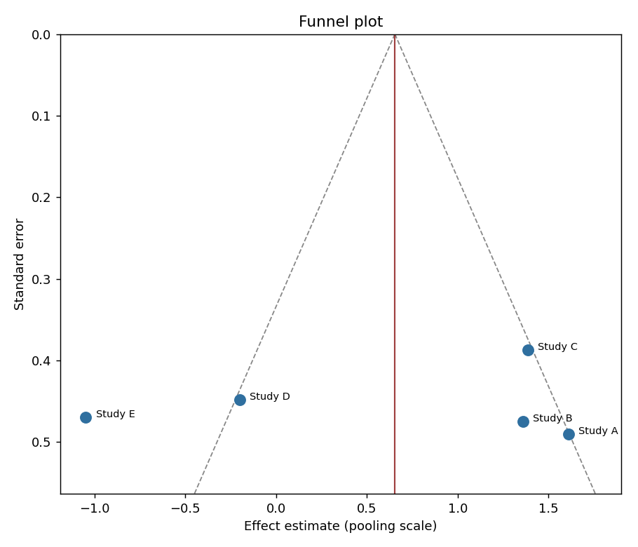

Module 19 — Track 1: Core EnginePublication Bias Detector
00Before You Start
Finished Module 17 —
this module checks the same pooled result for a problem meta-analysis
alone can't see: whether the included studies are a biased sample of all
the evidence that actually exists.
01The Big Analogy
The empty side of the photograph
Imagine a class photo where students are naturally scattered by height
— tall ones spread wide at the back, short ones clustered tight at the
front, roughly symmetric left to right. Now imagine one side of the
front row is conspicuously empty. Not because those students don't
exist — because the shortest students who would have stood on that
side, for whatever reason, aren't in the photo at all.
A funnel plot is that class photo: precise (large) studies naturally
cluster tight near the top, imprecise (small) studies naturally
scatter wide near the bottom, symmetric around the true effect if
nothing's been left out. Publication bias is the empty side of the
front row — small studies with null or unfavorable results that never
got published, and so were never available to be included at all.
render_funnel_plot() draws the photo. eggers_test()
is the statistical version of noticing the empty side and asking
whether it's really empty, or just looks that way by chance.
02What Happens, Step by Step
eggers_test() regresses each study's standardized effect (y/se) against its precision (1/se) — Egger's actual published regression specification- The regression's intercept is the test statistic: zero means no detected asymmetry, a large intercept (relative to its own standard error) means the funnel looks lopsided
- The intercept's t-statistic is compared against a critical value for the regression's degrees of freedom (
n - 2) to decide significance
render_funnel_plot() draws every study's (effect, SE) point, a vertical line at the pooled estimate, and dashed lines marking the pseudo-95%-CI funnel around it- The y-axis is inverted — precise studies plot near the top, imprecise studies scatter wider near the bottom, matching the field-standard funnel shape
03A Map of the State
The image below is this module's actual, unedited output.

Real output: Studies A, B, C cluster right of the pooled line; D and E sit left — visible asymmetry, though not statistically significant at n=5.
eggers_test(effects)
│
▼
xs = [1/se for each study] (precision)
ys = [y/se for each study] (standardized effect)
│
▼ fit: ys = intercept + slope * xs
intercept = -5.645 se_intercept = 15.034
t = intercept / se_intercept = -0.375
df = 5 studies - 2 = 3
│
▼
|t| = 0.375 vs. t_critical(df=3) = 3.182
0.375 < 3.182 -> NOT significant at p<0.05
│
▼
(explicit caveat: only 5 studies — too few for this test to be
conclusive either way, per Cochrane Handbook guidance)
04The Code, Explained
xs = [1 / e.se for e in effects] # precision
ys = [e.y / e.se for e in effects] # standardized effect
x_mean, y_mean = sum(xs) / n, sum(ys) / n
ss_xx = sum((x - x_mean) ** 2 for x in xs)
ss_xy = sum((x - x_mean) * (y - y_mean) for x, y in zip(xs, ys))
slope = ss_xy / ss_xx
intercept = y_mean - slope * x_mean
That ss_xx denominator is exactly what broke during this
module's own development — see the Brain Exercise.
05Limits / What You Cannot Do Yet
Can't do yet
- Draw a statistically sound conclusion from fewer than ~10 studies — the test's own power is too low, stated explicitly in the demo's own output
- Distinguish publication bias from other causes of funnel asymmetry (true heterogeneity, chance) — Egger's test detects asymmetry, not its cause
- Run at all with fewer than 3 studies, or with studies that all share identical precision — both are real, checked failure modes
Can do
- Compute Egger's actual published regression correctly, verified against its real mathematical requirements
- Render a real, field-standard funnel plot from real pooled data
- Report a result honestly alongside the specific reason it shouldn't be over-interpreted
06Run It
python publication_bias.py
Expected output (deterministic, no network involved):
All self-checks passed.
Egger's test
intercept = -5.645 SE = 15.034
t = -0.375 df = 3
significant asymmetry at p<0.05? False
CAVEAT (real, not boilerplate): this test was run on only 5 studies.
The Cochrane Handbook recommends against interpreting funnel-plot
asymmetry tests with fewer than ~10 studies — with this few studies,
the test has very low power to detect real asymmetry either way.
This demo proves the MECHANISM works, not that 5 studies is enough
evidence to draw a real conclusion about publication bias.
Funnel plot saved: funnel_plot_demo.png, 40992 bytes, valid PNG header: True
07Brain Exercise
This module's first version of its own self-checks crashed with a real `ZeroDivisionError`. What caused it, and what does that failure actually teach?
The original test data gave all four studies the exact same
standard error. `xs = [1/se for e in effects]` was therefore
identical for every study — zero variance in the regression's
independent variable, making ss_xx (the sum of
squared deviations from the mean) exactly zero, and
slope = ss_xy / ss_xx a division by zero. This isn't
an implementation bug to patch defensively — it's a genuine,
correct mathematical fact: you cannot fit a regression line
against a predictor that never varies, because there's no
information in the data about how the outcome changes as the
predictor changes. The fix wasn't error-handling code; it was
recognizing the test data itself was unrealistic (real studies
essentially never share an identical SE) and using varied,
more realistic SEs instead.
08There Are No Dumb Questions
If the funnel plot visually looks asymmetric, why does the module still say "not significant"?
Because visual asymmetry and statistically significant asymmetry are different claims. With only 5 data points, a regression's intercept can look meaningfully off-center just from ordinary sampling variation — the t-test exists precisely to ask "is this asymmetry bigger than chance alone would produce," and with this little data, the honest answer here is "we can't tell yet."
Even with enough studies and a significant Egger's test, does that prove publication bias specifically?
No — this is stated directly in the Limits section. Funnel asymmetry can come from genuine heterogeneity (smaller studies might have been conducted in genuinely different populations), from chance, or from publication bias. A significant Egger's test is evidence worth investigating further, not a standalone proof of any one specific cause.
Why does the funnel plot use the pooling-scale effect (e.g. log odds ratio) on the x-axis instead of the natural-scale odds ratio?
Because the funnel shape's symmetry assumption relies on the sampling distribution being approximately normal — which is the log scale for ratio measures, the same reasoning Modules 16-18 already established. Plotting raw odds ratios directly would distort the funnel shape, since that scale isn't the one where the underlying statistics are actually symmetric.
09What's Next
Every synthesis artifact — evidence table, forest plot, funnel plot —
now exists as a separate piece. Module 20 compiles all of them, plus the
PRISMA diagram, into one complete review report: the final module of
Track 1's core engine.